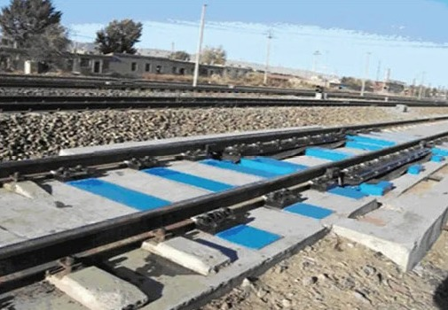
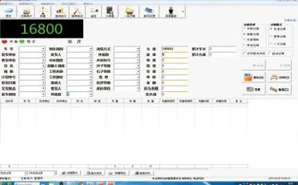

Modular truck scales
SCS models cover 20 to 150 tonnes with pit or above-ground installation. Bolt-connected split platform for container transport. SCS-20/30/50/60/80/100/120/150 models support above-ground or pit installation.
Request information Compare truck scale models
Unattended weighbridge system
One-way or two-way traffic with card, plate or QR identification, vehicle positioning, image capture and barrier control.
Email inquiry Unattended weighbridge systemsFramed floor scale
Rated at 0.5, 1, 2, 3, 5 or 8 t. Available with checker plate or stainless steel deck and optional ramp.
Email inquiry Floor scale optionsFrameless floor scale
Rated at 0.5, 1, 2, 3 or 5 t for forklift and manual handling applications. Stainless steel option.
Email inquiry Floor scale optionsHigh-precision floor scale
Stainless steel platform with optional ramp. Listed capacities are 0.5, 1, 2, 3, 5 and 8 t.
Email inquiry Floor scale options
Card-based weighing and loading
Connects booking, gate queues, first weighing, bulk or metered loading, second weighing and exit control.
Email inquiry Unattended weighbridge systems
Self-service weighing kiosk
Self-service terminal for scan-based weighbridge transactions.
Email inquiry Unattended weighbridge systems
Rail weighbridges
Select a configuration according to rolling stock, track layout and operating procedure.
Request information Related applications
Belt scales
Continuous bulk weighing depends on belt width, speed and material characteristics.
Request information Related applications
Reactor weighing
Vessel weighing requires review of supports, pipe connections and module installation.
Request information Related applications
Feed silo weighing system
For 2–25 t feed silos with four, six or eight supports, beam modules, a junction box and K3S controller.
Email inquiry Related applications
Livestock pen scale
Pen platform with optional ramp. Available capacities are 0.5, 1, 2, 3, 5 and 8 t.
Email inquiry Related applications
Ready-mix plant weighing software
Tracks loads and volume by project, contract and concrete grade, with staged dispatch, ticket printing and ERP integration.
Email inquiry Related applications
THDJ-5001 digital metal detector
Balanced detection and phase adjustment for food and pharmaceutical production lines.
Email inquiry Related applications
AT-SSG overhead rail scale
300, 500 and 1,000 kg capacities with 0.1, 0.2 and 0.5 kg divisions respectively. RS232 and Ethernet outputs.
Email inquiry Related applications
Wheel loader scale
On-board sensors and a cab indicator measure material handled by the loader bucket.
Email inquiry Related applications
Wheel washing station
A vehicle-lane station for washing wheels before departure.
Email inquiry Unattended weighbridge systemsAnti-tamper load cell
Column-style truck-scale load cell with anti-tamper and lightning protection.
Email inquiry Compare truck scale modelsQS digital load cell
Wheel-type elastic element for industrial weighing with individually addressable digital communication.
Email inquiry Compare truck scale modelsYZZ-M modular load cell
Modular assembly with a levelling device. Listed capacities range from 30 to 150 tonnes.
Email inquiry Compare truck scale modelsZS column load cell
Welded stainless steel construction for chemical, mixing and cement plant applications.
Email inquiry Related applicationsTank weigh module (0.3–25 t)
For tank scales and force measurement systems. Select the capacity for each support.
Email inquiry Related applicationsHeavy-duty stainless steel weigh module
For large tank scales. Available ratings are 30, 40, 50, 100, 200, 300 and 500 t.
Email inquiry Related applicationsTank weigh module (0.25–10 t)
Mounted at vessel supports to convert the applied load into a weighing signal.
Email inquiry Related applicationsHopper and batching weigh module
For hopper scales, conveyor belt scales and batching systems.
Email inquiry Related applicationsRFID card reader
Identifies tagged vehicles at the weighbridge. Supports ISO 18000-6B and EPC Class 1 Gen 2 tags.
Email inquiry Unattended weighbridge systemsLicense plate recognition camera
Captures plates at up to 1920 × 1080 and supports barrier gate control.
Email inquiry Unattended weighbridge systemsCode and NFC reader
Reads NFC cards, barcodes and two-dimensional codes, with Ethernet connectivity.
Email inquiry Unattended weighbridge systemsTraffic signal light
Red and green LEDs direct drivers to stop or proceed in a weighing lane.
Email inquiry Unattended weighbridge systemsPlastic-housing weighing indicator
AC or DC powered indicator for floor scales, truck scales and static rail scales.
Email inquiry Floor scale optionsStainless steel weighing indicator
Stainless steel enclosure and rubber keys with AC/DC power and networking.
Email inquiry Floor scale optionsK3S weighing controller
Panel-mounted controller with an aluminium alloy housing for packaging, proportioning and limit control.
Email inquiry Related applicationsWeighing ticket printer
24-pin flat-feed printer with configurable ticket formats and one original plus six copies.
Email inquiry Floor scale options